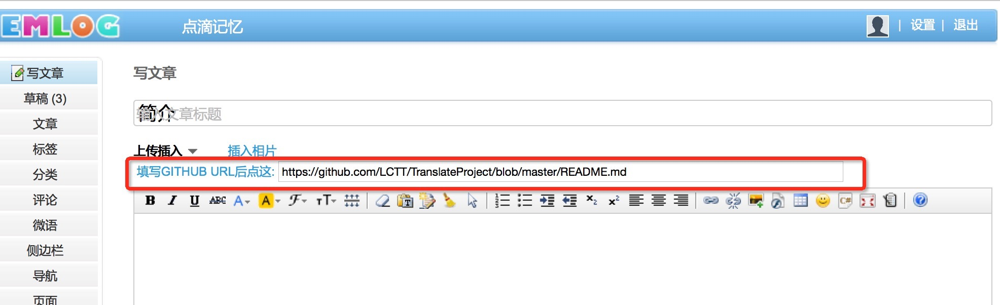
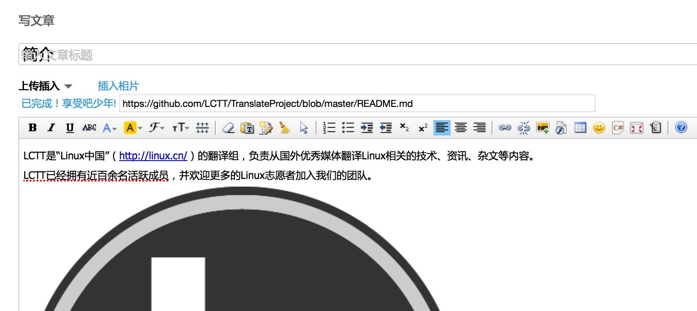

代码测试:
#include <stdio.h>
int main() {
printf("Andy is single.\n");
return 0;
}
引用测试:
Andy needs a girl friend.
好了。以上是用来测试的。转入正文。这个插件的使用方法很简单。面向的受众也会很窄。因为主要是为了自己的使用方便。我的习惯是将博客写成markdown,然后提交到github上去，做一个备份。然后再在blog上填写。之前写了markdown的几个插件，在没有贴图的时候还是比较方便的，但是如果图片比较多的话，就变得非常的痛苦。比如，我在markdown里面写的是**(./images/github-test-1.jpg)**,但是博客里无法识别，所以需要先把图片上传到EM相册里面，然后再一个一个的修改链接，痛苦。后来觉得可以用github的图片，但是细想，那还不如直接用它的markdown解析效果。所以，就写了这么个插件。
安装插件之后，你会在博客后台，写日志的时候看到如下的东西：

填写完成之后，只需点击前面的说明，就可以同步了。效果如下：

然后就是简单的保存和提交了。还在怀疑吗，其实这篇文章就是用这个插件写出来的,原文在这-GITHUB。
写markdown的时候需要注意以下几点。开头第一行一定需要是标题，且用"==="或者"---"标注
比如：
这是标题
===
这边是正文。。。。。
。。。。。。。。。。
这样插件才能进行识别(识别的是(H\d)标签的标题，了解的可以使用其他的方式)。
简单而又麻烦的字符串操作。Ajax。恩，就是这么简单。。。